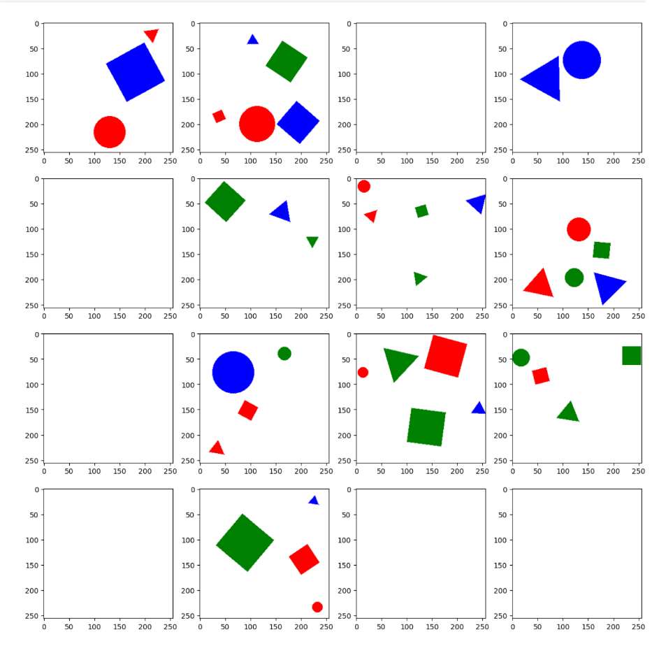
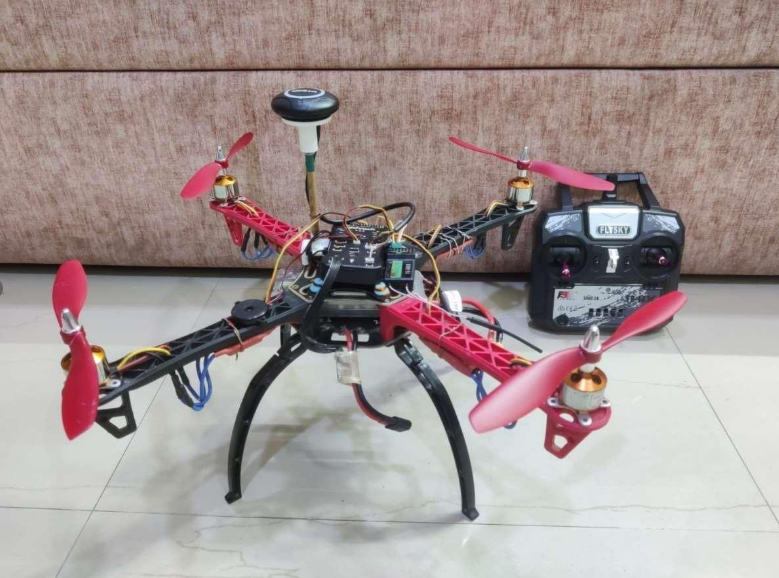

Additional Projects
A deep dive into some areas of robotics & computer vision
|

|
Multi-label Multi-object Classification
Deep Learning
report / code
An evaluation study to determine simplest data and model-centric approaches for shape & colour classification in images. The objective was develop a minimalistic pipeline, engineering every last bit from pure hyperparameter tuning and training strategies, capable of robust classification.
• Training strategies: Experimented the effect of Canny Edge pre-processing, CNN model depth, loss functions, data augmentation on validation loss, pipeline stability and training time.
• Hyperparameter tuning: Fine-tuned fully-connected and convolutional layers to find optimal point of depth and precision.
• Label-free mapping: Deployed an empirical spectral mapping for color recognition without explicit labelling. Achieved 95% accuracy on entire dataset.
|
|

|
Swarm Area Search using Chaos-Based Secure Communication
Bachelor's Degree Thesis
report
Designed a C++ based central system for decentralised path planning for a hetereogenous drone swarm (varying search radii and onboard capacities), with a custom chaotic systems-backed encryption network for inter-system communication.
• Search radius-aware path planning: Developed a C++ based central control system, with dynamic Voronoi cell generation for search-radius aware path planning, with 57% trial accuracy in collision test-case verification.
• Optimized planning algorithm: Deployed a traveling-salesman problem for modelling planning, adding HK optimization for 15% improvement in collision cases and reduced search area overlap.
• Chaotic system encryption: Designed a Rossler chaotic system for two-way keyed secure modulation, with random number generated demodulation keys. Tested system against penetration and man-in-the-middle attacks to verify security.
• Test drone development: Built a small (~2.5lbs) drone using Pixhawk 2.4.8 from the ground up, selected electronic speed controllers (ESCs), motor capacity, propeller radius and battery based on flight time requirements and desired range of operation.
|
|